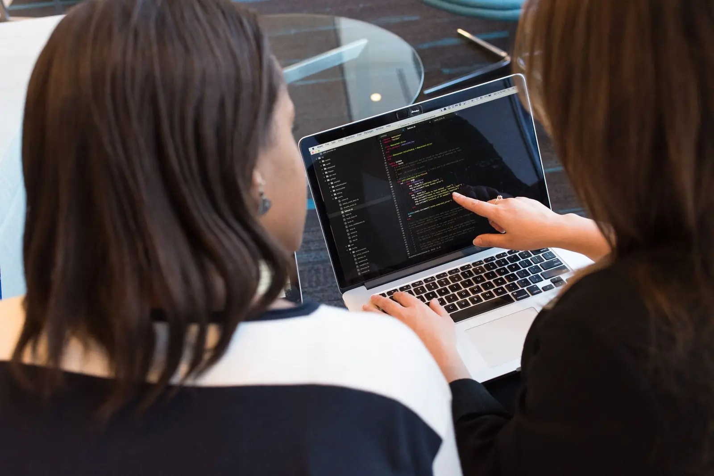

Informe suas competências
Na primeira utilização, liste tecnologias, ferramentas e conhecimentos que você realmente possui.
Salve suas competências uma vez e compare-as com diferentes vagas de tecnologia. Depois, basta colar os requisitos para descobrir seus pontos fortes e o que ainda pode desenvolver.
O resultado é uma orientação inicial baseada em palavras-chave, não uma garantia de contratação.
Na primeira utilização, liste tecnologias, ferramentas e conhecimentos que você realmente possui.
Depois que o perfil estiver salvo, use o texto completo para identificar os requisitos.
Veja a pontuação, os termos encontrados e os conhecimentos que merecem atenção.

Nem toda exigência de uma vaga é eliminatória. O NexaMatch organiza as informações para ajudar você a decidir onde já possui uma boa base e quais lacunas podem ser estudadas.
Use o resultado como ponto de partida para conversar com colegas, professores e profissionais da sua rede.
Começar agora